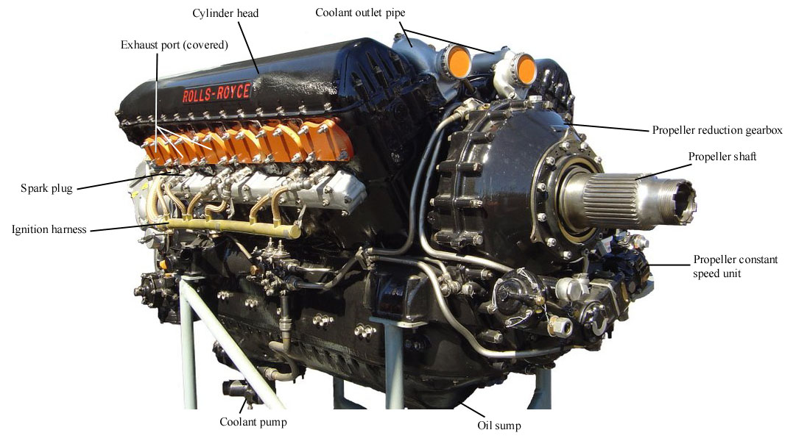
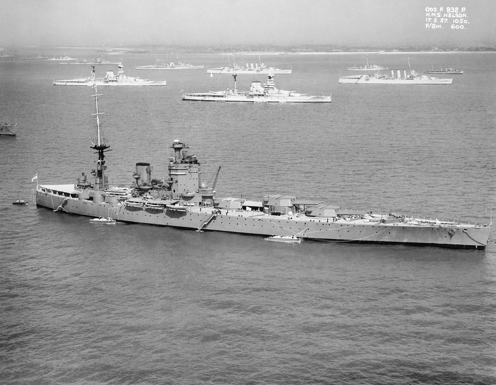
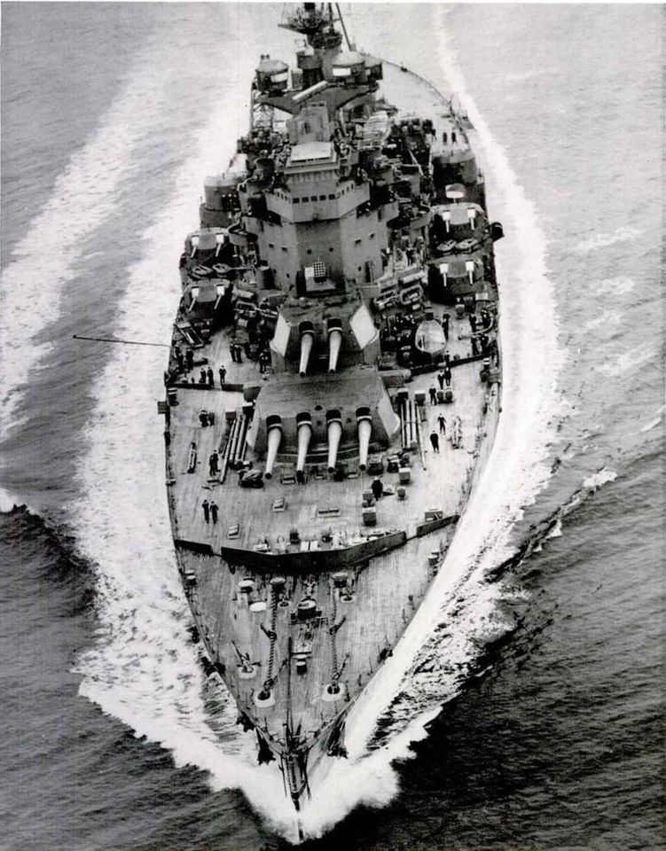
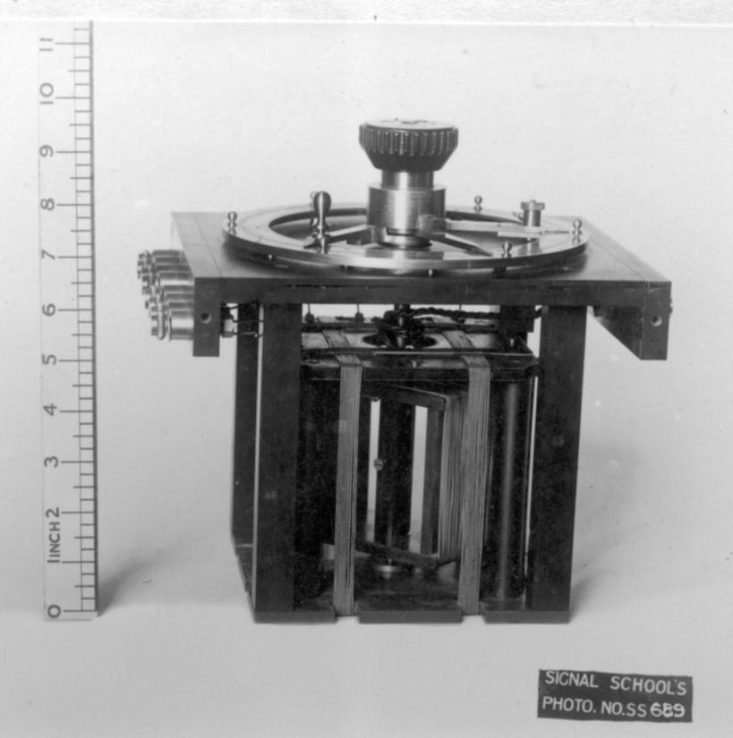
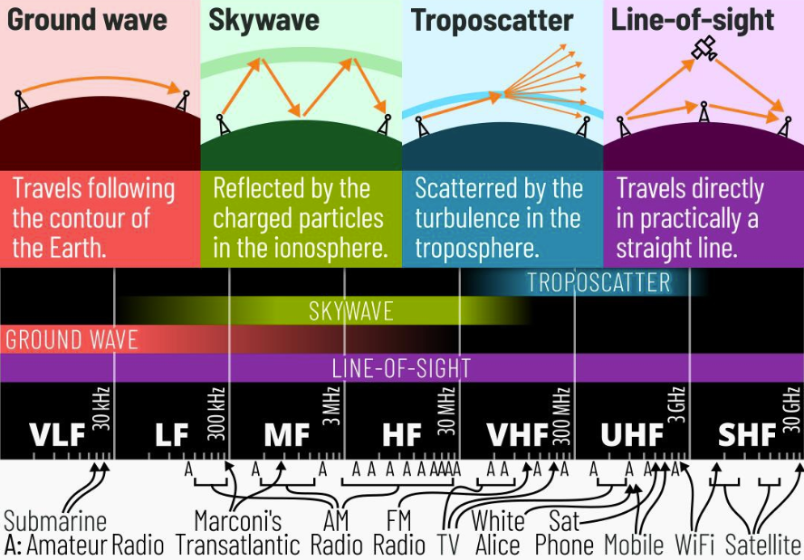
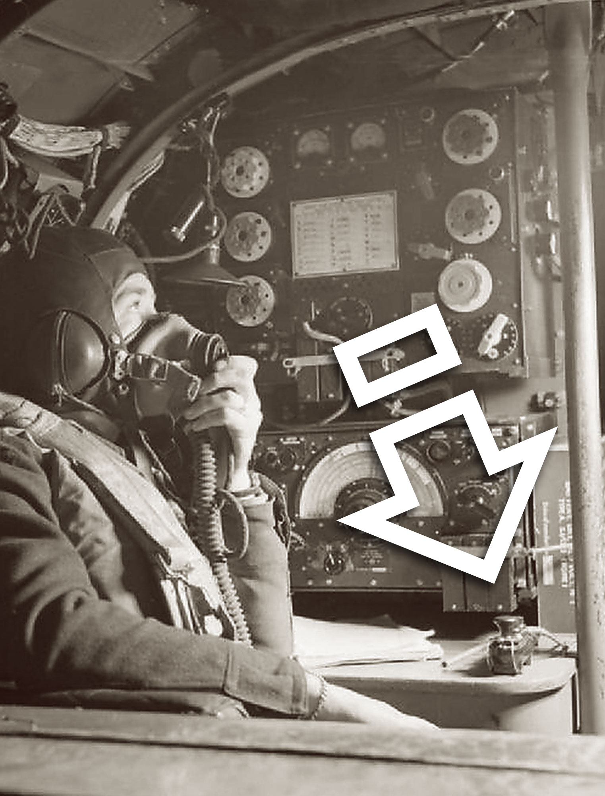
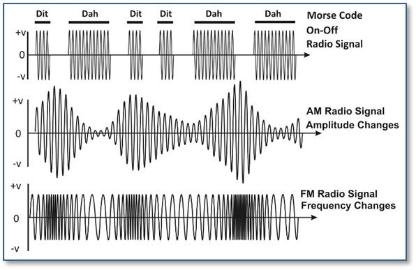

레이더 개발 이야기 (5) - 공군과는 달랐던 해군
게시: 2022-10-13T06:30:41+09:00
<로열 네이비가 삐뚜루 나간 이유> 로열 에어포스가 레이더라는 것을 만들고 있다는 소식을 접한 로열 네이비는 곧장 독자적인 레이더 개발을 시작. 외부의 시각으로 보면 '로열 네이비가 자존심 때문에 공군이 개발해놓은 것을 쓰지 않고 독자 개발을 선택하여 아까운 예산을 2배로 낭비한다'라고 볼 수 있는 대목. 그러나 이건 공군과 해군이 근본적으로 다른 환경에서 다른 방법으로 싸우는 조직이라는 것을 모르기 때문에 나오는 오해. 일단 공군 레이더는 부동산 가격이나 전기 요금 신경을 안쓰고 원하는 대로 자원을 펑펑 쓰는 물건. 전파의 파장 길이를 탐지하려는 항공기 날개폭에 맞추는 것이 좋다? 그럼 그에 맞춰 25m짜리 안테나를 쓰면 됨. 높은 곳에 설치하는 것이 좋다? 높은 탑을 만들면 됨. 레이더 하나에 350kW의 전력이 필요하다? 메가와트급 발전기를 설치하면 됨. 메가와트급이라고 엄청난 것은 아님. WW2 당시 스핏파이어 전투기의 Rolls-Royce Merlin (사진1) 엔진 출력이 962kW였음.

공군이 이렇게 공간과 중량, 전력량에 제한을 받지 않은 것은 공군의 레이더 운용 목적이 영공 방어였고, 따라서 X개도 50% 따고 들어간다는 홈그라운드의 이점을 모두 살릴 수 있었기 때문. 로열 에어포스도 나중에 방어가 아니라 공격, 즉 독일 폭격에 나서게 되면서 항공기에 레이더를 실을 필요를 느끼게 되지만 그건 나중의 문제. 그에 비해 로열 네이비는 영국 해안가에서 싸우는 조직이 아니라 망망대해에서 좁은 배를 타고 싸워야 하는 조직. 물론 수만톤짜리 전함을 좁은 배라고 부르면 좀 이상할 수는 있겠지만, 드넓은 대지를 얼마든 사용할 수 있는 공군에 비하면 진짜 제한된 공간과 전력만을 이용해야 하는 열악한 환경. 원래부터 군함에는 관측용 마스트가 있었으므로 높이는 그나마 좀 나았는데, 크기나 무게는 제한이 있었음. 아무리 기능이 중요하다고 해도, 거친 파도와 폭풍에 노출되는 전함 마스트에 수십 m짜리 안테나를 얹는 것은 모양새는 둘째치고 내구성이나 운용 측면에서 문제가 될 수 있었음. 가령 당시 주력함이던 HMS Nelson (3만8천톤, 23노트, 사진2)의 함폭이 32m에 불과했음.

참고로 4년 뒤인 1939년 진수된 로열 네이비 최신예 전함인 HMS King George V (4만2천톤, 28노트, 사진3)는 8개의 보일러에서 총 93 Mega Watt의 동력을 냈지만 대부분은 물리적 추진력에 사용되었고 전력 발전 용량은 2.8 Mega Watt에 그쳤음. 물론 이런 전력 발전량의 대부분은 통신 장비며 다양한 조명 및 모터 등등 다 쓸 곳이 이미 있었음. 게다가 구축함 같은 작은 함정에도 레이더를 달아야 한다는 것을 감안하면, 레이더의 전력량은 공군에서 쓰는 것의 10% 정도로 제한되어야 했음.

거기에 더해, 로열 에어포스가 만든 레이더에는 전력량이나 크기, 무게보다 더 중요한, 결정적인 문제가 있었음. 그것은 바로... <공군에는 멍청이 밖에 없는 것인가?> 어둠 속에 숨은 도둑을 찾으려 할 때 플래쉬 라이트를 켜고 찾는 것은 경찰의 상식. 그러나 어둠 속에 매복한 적의 저격병을 찾으려 플래쉬 라이트를 켜는 저격병은 없을 것. 플래쉬 라이트를 켠다고 즉각 적을 찾을 수는 없지만, 내가 플래쉬 라이트를 켜는 순간 나의 위치는 즉각 적군 저격병에게 전달되기 때문. 적기 또는 적함을 찾겠다고 레이더를 켜는 것도 플래쉬 라이트를 켜는 것과 동일한 행위. 아직 레이더라는 것이 개발되기 이전이던 1935년 당시에도 이미 라디오 방송이든 무전기 송신파이든 레이더파든 뭐든 아무튼 전파의 발신원 위치를 찾아내는 기술은 널리 알려져 활발히 사용되고 있었기 때문. 이미 전에 소개한 Bellini-Tosi direction finder가 바로 그것. 1930년대 중반에는 이미 작은 사이즈의 훌륭한 전파 방향 탐지기(radiogoniometer)가 현장 배치된 상태였고, 로열 네이비의 군함에도 이미 탑재되어 있었음 (사진1. 한쌍의 전자장 코일 속에 더 작은 크기의 회전 sense coil이 들어있는 것이 보임. 그것이 Bellini-Tosi 장치의 핵심.)

따라서 레이더를 켠다는 것은 자신의 위치를 대놓고 드러내는 행위. 어차피 고정된 위치의 레이더 기지를 생각한 공군은 그게 아무렇지도 않았음. 그러나 군함의 위치를 숨기는 것이 기본 중의 기본이었던 로열 네이비로서는 레이더의 스위치를 켜는 것은 상황에 따라 매우 신중하게 결정해야 하는 일. 게다가 로열 네이비가 '공군놈들은 멍청이만 모였나'라며 한심하게 생각한 것이 있었음. 바로 전파의 파장 (wave length), 즉 주파수 (frequency). 초창기 공군의 Chain Home 레이더는 20~30 MHz의 주파수, 즉 15~10미터 파장의 전파를 사용. 이는 ITU (International Telecommunication Union) 구분에 따르면 HF (High Frequency)에 해당하지만 요즘 기준으로 보면 상당히 낮은 주파수의 전파인데, 이 대역의 전파의 주요 성질 중 하나는 대기 중 전리층(ionosphere)에 반사되어 수평선 너머 멀리 퍼진다는 것 (사진2).

공군이야 야간 공습 때 적기를 찾는다며 하늘에 탐조등을 비춰대는 애들이니 '자기 위치 은닉'에 대한 개념이 없겠지만, 해군 입장에서는 사방이 수평선인 북해에서 레이더를 켤 때 독일 해군이 킬 군항에 앉아서도 간단한 삼각측량을 통해 아군함이 어디에 있는지 쉽게 알 수 있다는 뜻으로서, 이건 절대 피해야 할 상황임. 근데 애초에 로열 에어포스는 정말 멍청이들만 모인 집단도 아닐텐데 왜 이런 장파를 썼을까? 이유가 있었음. 그 이유는... <전자공학에 약했던 로열 에어포스> 물론 공군이 멍청해서 이런 장파를 쓴 것은 아님. 전리층에 반사되지 않는 전파, 즉 HF를 넘어서는 VHF (Very High Frequency)를 쓰려면 당시 상용 진공관보다 더 높은 고전압 진공관을 써야 했는데, 공군은 그럴 형편이 아니었음. 이유는 전통적으로 공군이 유체 역학과 기계 공학 같은 것에만 집중했고, 상대적으로 전자통신 분야는 등한히 했기 때문. 항공기에서 최초로 무선 통신을 이용했던 것은 1912년으로서 꽤 이른 시점이었지만, 1930년대 초반까지만 해도 항공기에서 무전을 쓸 일도 별로 없었던 것. 미야자키 하야오의 '붉은 돼지'를 보면 조종사끼리 수신호로 교신하는 것이 다 이유가 있었던 것 (사진1).
(포르코의 옛 친구인 이 공군 아저씨는 포르코의 뒷좌석에 앉은 여자 아이의 외모를 수신호로 묘사하고 있는 중. "돼지 목에 진주로군!" ) 그나마 1930년대 부터는 음성 무전기가 전투기에 장착되기 시작했으나, 어차피 레이더가 없어서 지상에서 유도를 받을 이유도 없다보니 항공기에서 굳이 엄청난 먼 거리와 음성 메시지를 주고 받을 이유가 없었기 때문에 고성능 무선통신에 투자할 이유가 없었음. 다만 정찰기에는 장거리 무전기를 달았는데, 당시 진공관 수준으로는 뚜렷한 음성 메시지를 멀리 보내기 어려웠기 때문에 안정적이고 확실한 Morse 부호로 지상 기지국에 메시지를 보냈음. WW2의 미드웨이 해전을 다룬 영화를 보면 일본군 장거리 정찰기가 미군 함대를 발견했을 때 음성이 아니라 모르스 부호 송신기를 써서 아군 함대에 신호를 날리는데, 당시 기술로는 그런 장거리 통신에 어려움이 있었기 때문. 모르스 부호 송신기는 음성 무선통신과는 달리 AM (amplitude modulation)도 FM (frequency amodulation)도 쓰지 않고 그냥 ON-OFF로만 신호를 보냈기 때문에 장거리에서도 또렷이 메시지를 전할 수 있었으므로, 진공관이 꽤 발전된 WW2 후반에도 영국 공군 Lancaster 폭격기에도 장거리 통신용으로는 Morse code sender key를 장착했음 (사진2).


(위는 AM과 FM, 그리고 모르스 신호 통신의 차이점. 모르스 신호는 신호가 약하고 잡음이 심해도 또렷한 메시지 전달이 가능함.) 하지만 초장거리 무선통신은 물론, 미약한 전파 신호를 이용해 상대 군함의 위치를 파악하는데 많은 노력을 기울이던 로열 네이비에게는 진공관을 죽어라 연구하던 Royal Navy Signal School이 있었고, 이들에게는 75MHz의 주파수를 내는 것이 그다지 어렵지 않았음. 적어도 로열 네이비는 그렇게 믿었음. 그러나 막상 해보니...